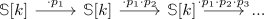

moore spectrum of a subring of the rationals
Proposition
Let $R = \mathbb{Z}[\frac{1}{p_i}] \subseteq \mathbb{Z}$ be a subring of the integers. Then the moore spectrum $M(R,1)$ is given as filtered colimit

see:
Proof
follows as
Let $R = \mathbb{Z}[\frac{1}{p_i}] \subseteq \mathbb{Z}$ be a subring of the integers. Then the moore spectrum $M(R,1)$ is given as filtered colimit

see:
follows as